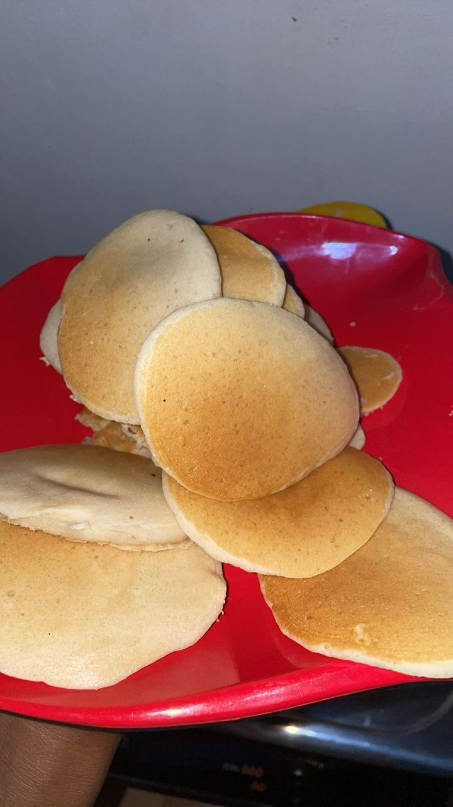
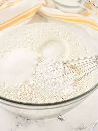
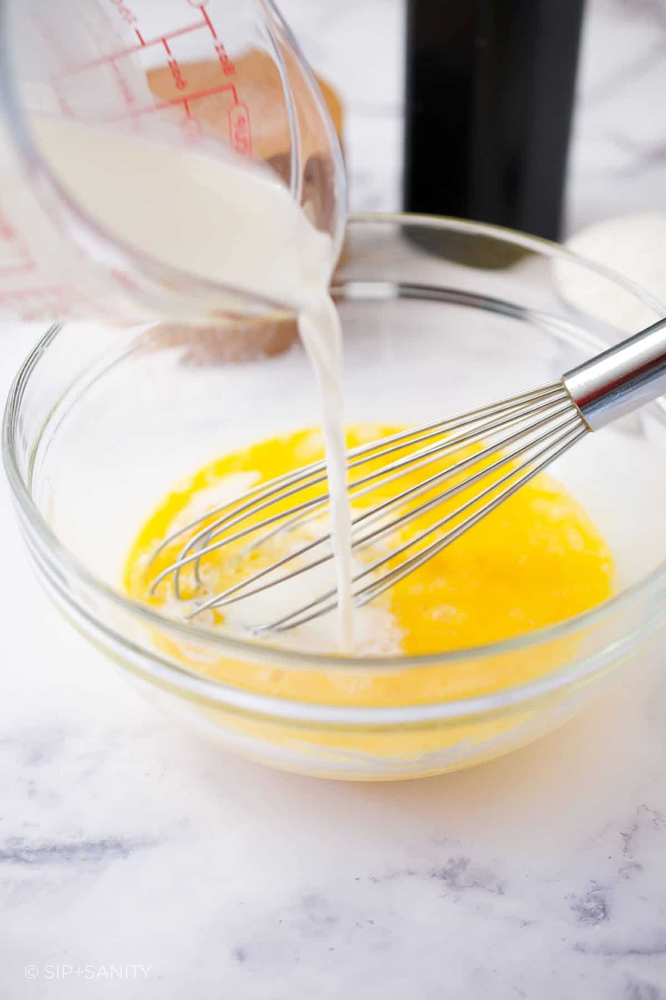

Irene Best Fluffy Pancakes
These pancakes are a weekend tradition in my family, light, fluffy, and melt-in-your-mouth delicious.
My sister perfected this recipe over the years, balancing sweetness, fluffiness, and a golden-brown finish. Whether served with eggs, pap, or a dollop of jam, they’re a breakfast worth waking up for!

Recipe Information
- Prep Time: 10 minutes
- Cook Time: 15 minutes
- Servings: 4 (makes about 8 pancakes)
- Difficulty Level: Beginner
Ingredients
- 1 ½ cups all-purpose flour
- 3 ½ teaspoons baking powder
- 1 tablespoon sugar
- ¼ teaspoon salt
- 1 ¼ cups milk
- 1 egg
- 3 tablespoons melted butter
Instructions
- In a large bowl, whisk together the flour, baking powder, sugar, and salt.

- In a separate bowl, beat the egg, then add milk and melted butter. Mix well.

- Pour the wet ingredients into the dry mixture and stir gently until just combined (do not overmix).

- Heat a lightly greased non-stick pan over medium heat.

- Pour about ¼ cup of batter for each pancake and cook until bubbles form on the surface, then flip and cook until golden brown on both sides.

Tips & Notes
- For extra fluffiness, let the batter rest for 5 minutes before cooking.
- Avoid pressing the pancakes down while cooking — this keeps them light and airy.
- Serve immediately for the best taste and texture.
Nutritional Facts
- Calories: 200 per pancake
- Protein: 5g
- Carbohydrates: 30g
- Fat: 7g
- Sugar: 3g